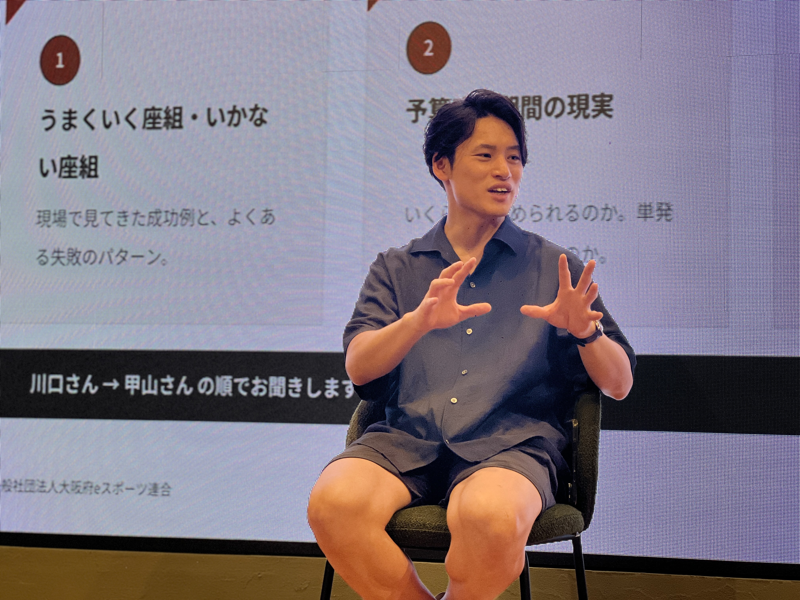
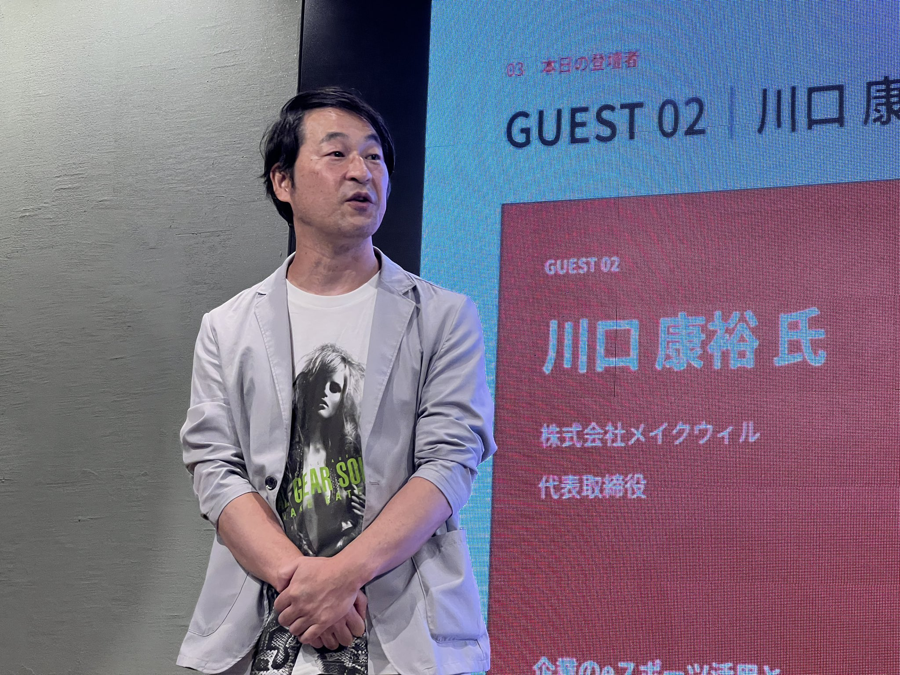
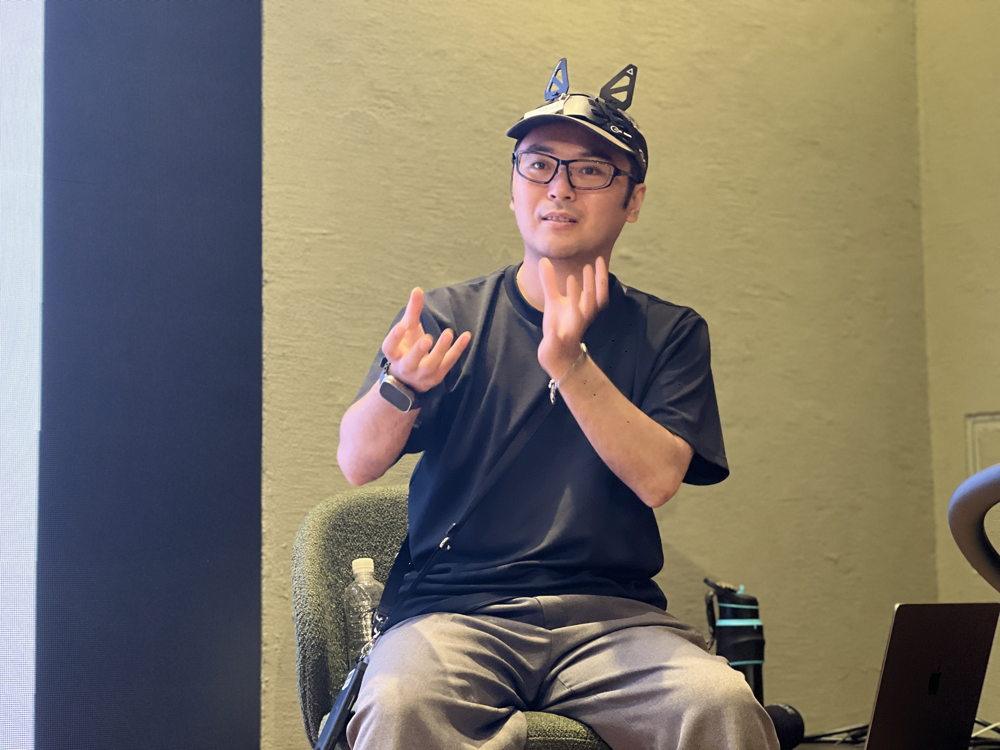
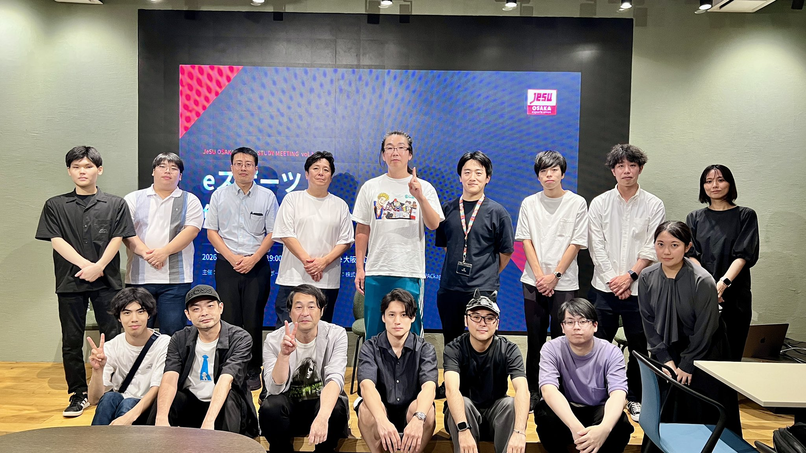

On Tuesday, August 25, 2026, we held an esports study and networking seminar at The Place Osaka in Shinsaibashi. 甲山翔也 of REJECT, 川口康裕 of Make Will and JeSU Osaka board member Yu Yamaguchi took part in a panel discussion.

Learn about the industry from a different perspective
The three speakers work in esports teams, marketing and advertising, and event production. The seminar covered competitive play and the work that supports teams and events.
PACkage Inc.Yu Yamaguchi

The work on the site can be answered from three questions.
The discussion covered revenue, partnerships with companies, and opportunities in Osaka and Kansai. The following highlights come from speaker 川口's public account of the event.
TOPIC 01
To a business that can continue the momentum
Mr. Kawaguchi cited device sales, paid tournament tickets, and merchandise as sources of revenue. He noted that attracting attention and generating profit are two different things, and that improvement and practical knowledge have to be developed through experience.
TOPIC 02
Think about how to engage from the perspective of the company's purpose.
In terms of cooperation with companies, four aspects were introduced: marketing, development of new products and services, recruitment, and employee satisfaction. Not only does the product PR matter, but the level of involvement also varies depending on what the company wants to achieve.
Improving existing products for people who enjoy playing games and providing employees with opportunities to watch and support through sponsorships are also examples of this.

TOPIC 03
The next point of contact being created in Osaka and Kansai.
Mr. Kawaguchi said Kansai can build on its own ties with local game companies and players and make events approachable instead of simply copying examples from Tokyo. That opened a discussion about how people and businesses in the region could work together.
From study sessions to opportunities for interaction
We set up an exchange meeting in addition to the study session, with a configuration where speakers and participants can speak in the same venue. We will continue to hold these events as an opportunity to connect those who want to make esports a career, companies considering its application in business, and those who are active in the local community.

Event Overview
- Event Date
- August 25, 2026 (Tue)
- Venue
- The Place Osaka (Chuo-ku, Shinsaibashi, Osaka City)
- Organizer
- Osaka esports Union (General Incorporated Association)
- Content
- Study meetings, panel discussions, exchange meetings
To the next study meeting
At JeSU Osaka, we offer study sessions and opportunities for networking to learn about industry practices. Please see the event page for the scheduled future events.
View the scheduled events for JeSU Osaka →